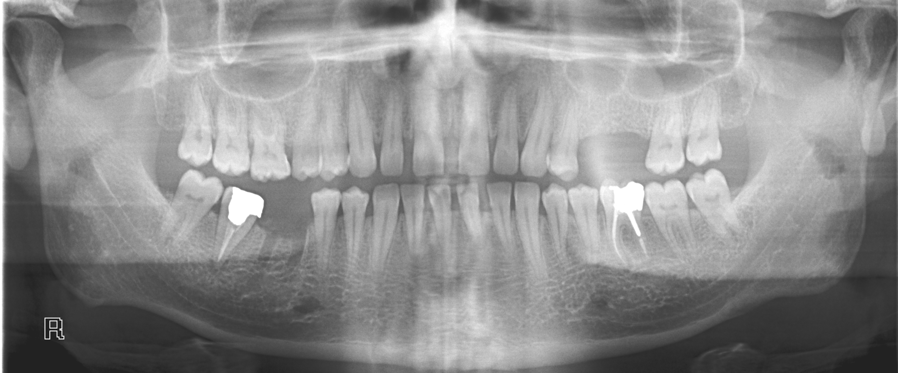
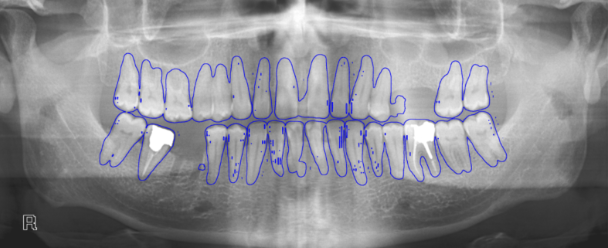
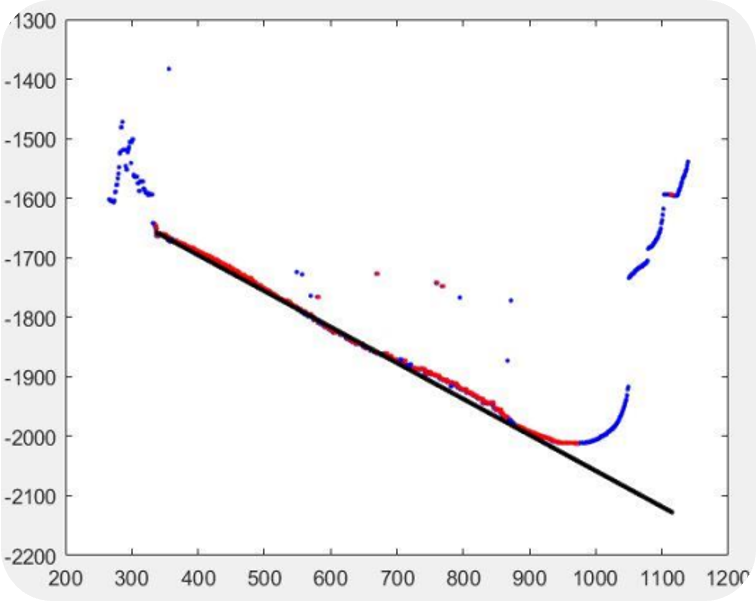
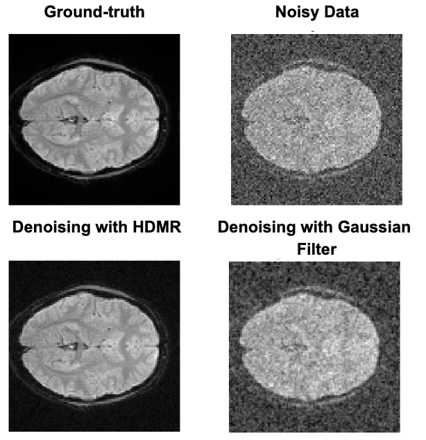
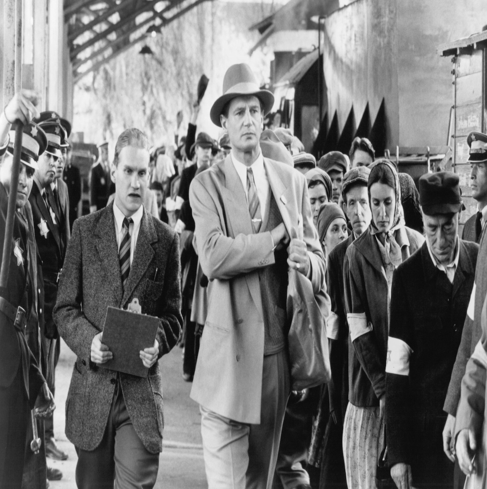
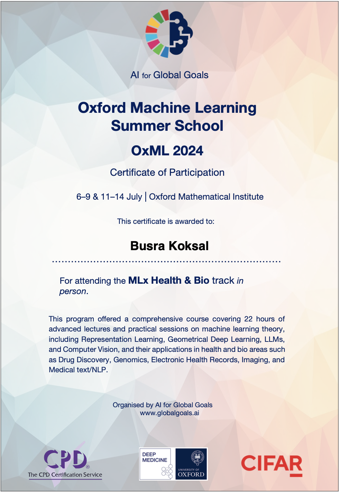
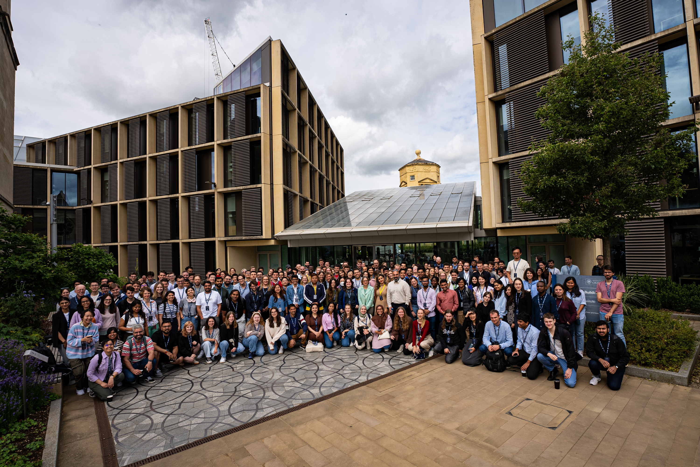
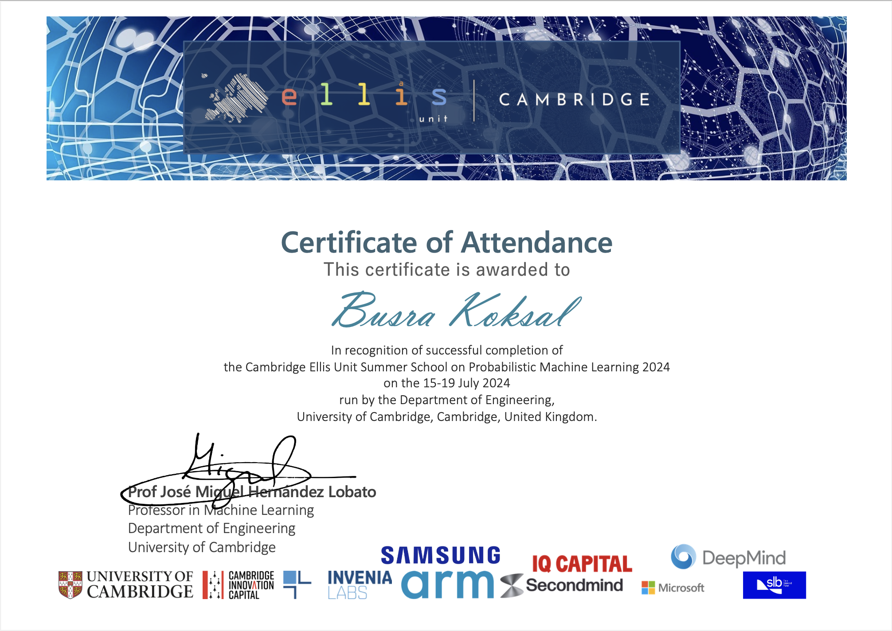
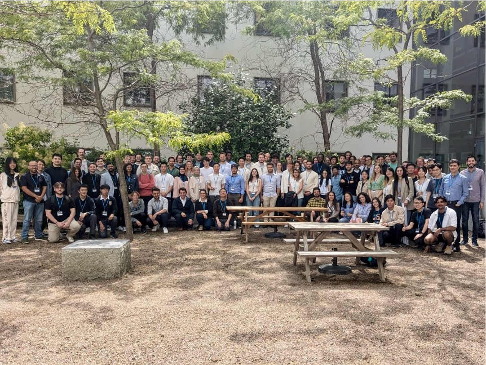

2022 — 2025
MSc, Mathematics Engineering
Istanbul Technical University · GPA 3.13/4
Thesis: Novel Edge Detection Methods Based on Schwarzian Derivatives and the Development of the MBB Edge Filter.
I am a mathematics engineer and researcher specializing in image processing and computer vision. My work spans medical image analysis — including dental X-ray processing, tooth segmentation, and fMRI denoising — as well as deep learning–based image colorization and enhancement.
During my Master's at Istanbul Technical University, I developed a novel edge detection algorithm — the MBB Edge Filter — based on Schwarzian derivatives, currently in the international patent process (PCT). My research was supported by the Google DeepMind Scholarship, through which I was mentored by a DeepMind researcher and attended programs at Cambridge and Oxford.
I am looking for opportunities where mathematical rigor and visual computing create real-world impact.
First recipient from outside Computer Engineering in Turkey, selected among 3–4 annually. Mentored throughout by a Google DeepMind researcher; visited the London office in person.
"A Filtering Method Used for Object and Edge Detection in Images" — the first application of Schwarzian derivatives to edge detection in the literature.
During my Master's research, I developed the MBB Edge Filter — a novel edge detection method based on Schwarzian derivatives. This represents the first application of Schwarzian derivatives to edge detection in the literature, introduced after a 39-year gap since the concept's last significant exploration. Unlike classical methods (Sobel, Prewitt, Canny), the MBB Filter does not rely on fixed masks, offering a flexible alternative that is adaptable across multiple application domains — including autonomous systems, industrial inspection, and defense applications — and suitable for real-time, energy-efficient processing.
| Method | PSNR ↑ | SSIM ↑ | F1 ↑ | FoM ↑ | FPS ↑ |
|---|---|---|---|---|---|
| Canny | — | — | — | — | — |
| Sobel | — | — | — | — | — |
| Prewitt | — | — | — | — | — |
| MBB (ours) | — | — | — | — | — |
Demirer, R. M., Köksal, B., Tunga, B. A Novel Edge Detection Method Based on Schwarzian Derivatives: MBB Edge Filter.
Elsevier — International Measurement Confederation (IMEKO), 2025.
Köksal, B., Demirer, R. M., Tunga, B. An Alternative Method for Edge Detection Using Schwarzian Derivatives.
Proceedings of ICOMAA-2025, Full-Text Proceedings Book, pp. 1–8, Istanbul. ISBN: 978-605-69387-8-8.
View Full Text (PDF) ↗ · View Source ↗
View PDF ↗Köksal, B., Demirer, R. M., Tunga, B. An Alternative Method for Edge Detection Using Schwarzian Derivatives.
ICOMAA-2025, Abstract Book, p. 37. ISBN: 978-605-69387-7-1.
View Abstract (PDF) ↗ · View Source ↗
View Abstract ↗Demirer, R. M., Köksal, B., Tunga, B. A Filtering Method Used for Object and Edge Detection in Images.
Turkish Patent and Trademark Office — Application No: 2025/002384 (Filed Feb 26, 2025).
International PCT — Application No: PCT/TR2026/050009 (Filed Jan 7, 2026).
Currently building a production-ready dental panoramic segmentation pipeline using PyTorch and U-Net++. This project extends my previous tooth segmentation work into an industry-grade architecture with modular code, Docker containerization, and an interactive demo for real-time inference.
Developed a U-Net-based pipeline for automatic tooth segmentation on 106 panoramic dental X-rays, including preprocessing (resizing/normalization), training, and inference.


Data: Panoramic Dental X-Rays With Segmented Mandibles (Abdi, Kasaei & Mehdizadeh, 2015) — Mendeley.
Built a MATLAB algorithm to calculate the effective angle for tooth extraction using X-ray images personally collected from a dental hospital. Based on the computed angle, the algorithm outputs whether the tooth extraction procedure would be effective or not.

Denoised fMRI time series using the nonlinear HDMR method as an alternative to the standard GLM approach. Implemented in Python, achieving high structural similarity with ground-truth data.

Data: OpenNeuro ds004349 (Frank & Zeithamova, 2022).
Colorized grayscale images using CNN, Autoencoder, and VGG16 with transfer learning, leveraging a custom dataset created from movie scenes. The lowest loss was achieved using an Autoencoder with the ADAM optimizer, demonstrating strong performance comparable to standard baseline models.

European Recycling Movement data analysis project in R (cleaning, visualization, reporting). Comparative ML project evaluating MLP, SVM, CNN, and regression models across multiple datasets using Python, PyTorch, TensorFlow, and Pandas.
Thesis: Novel Edge Detection Methods Based on Schwarzian Derivatives and the Development of the MBB Edge Filter.
MLx Health & Bio track. Completed certificate.


Completed certificate.


Thesis: Angle Calculation in Dental X-Rays Using Image Processing.
Conducted independent research in image processing and edge detection under the Google DeepMind Scholarship. Designed and developed the MBB Edge Filter based on Schwarzian derivatives, managing the full research lifecycle: literature review, mathematical modeling, algorithm design, MATLAB implementation, experimental validation across benchmark datasets, and end-to-end testing.
Led the patent application process (Turkish Patent Office + PCT international filing) and authored a journal article, currently under review as a revised manuscript at Elsevier's Measurement. Presented findings at ICOMAA-2025.
Generated, duplicated, manipulated, and reported datasets on MSSQL. Created dashboards on Power BI.
Developed web pages for program installation guides using PHP, JavaScript, HTML, CSS, and Bootstrap. Provided network, system, and software support across all ITU campuses.